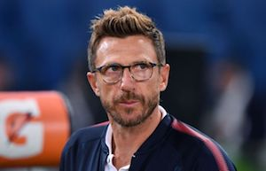
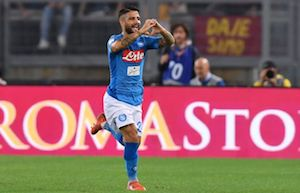
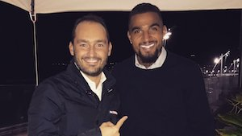
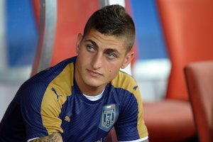
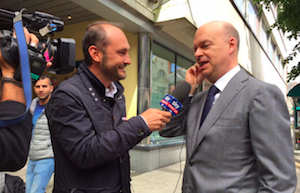
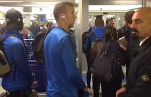
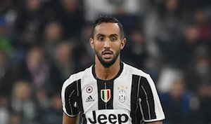

Roma, Di Francesco:”We showed a lot of courage against Chelsea, Schick will likely be selected”

Napoli-Inter, Insigne’s chances of playing increase: the latest

Boateng: "I dream about Ancelotti turning back to Milan. I could have played for Inter but I'm a rossonero!"

Psg, Verratti: "I didn't stay for the money. Some teams would have spent 100m for me..."

Milan, Fassone: "Montella-Mirabelli? We're all on the same side. Without Champions League 1-2 top players would leave"

Roma, Fazio: "We played a great match against Chelsea even though we didn't win"

Inter, probable lineup against Napoli

Juventus, injury status from Benatia to Marchisio: the latest
